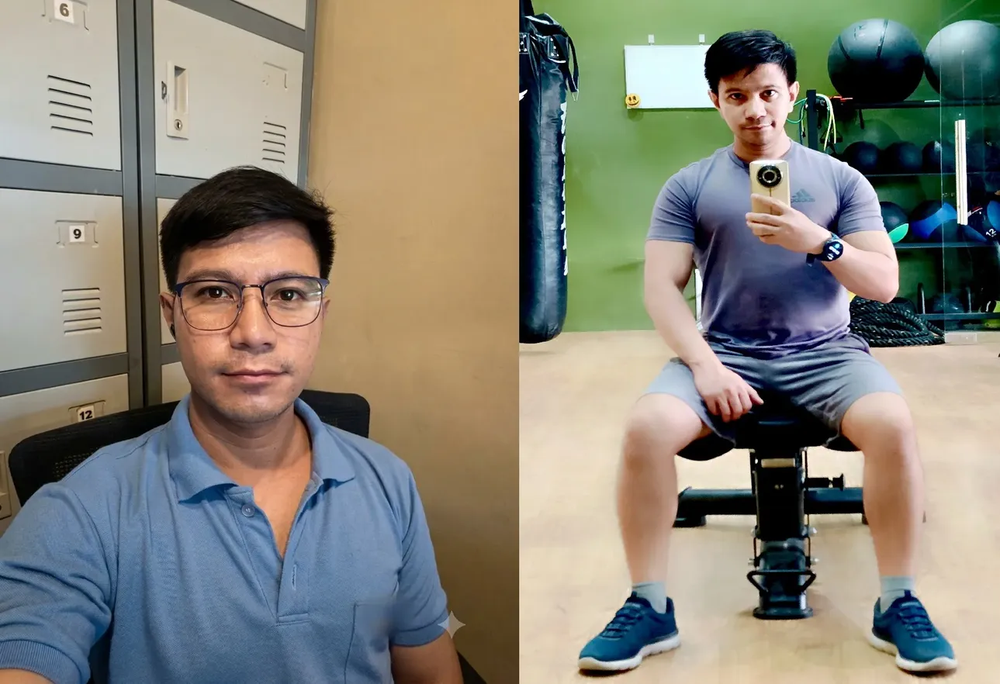
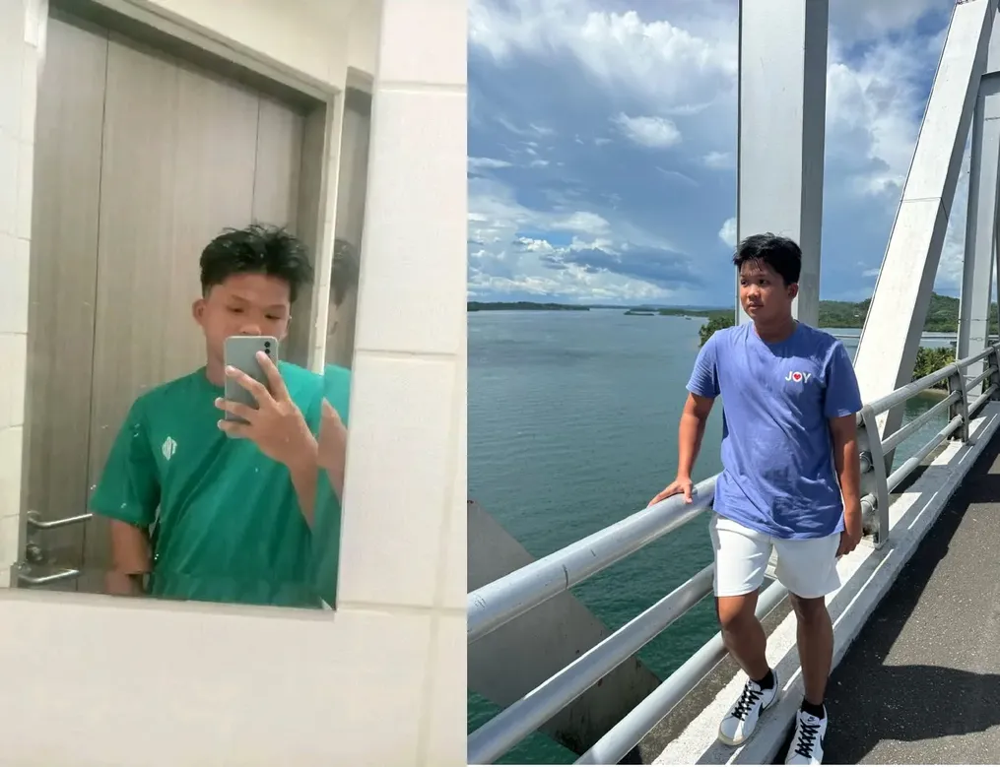

Hi, my name is Yvonnie Jude Mazo, but you can call me...
Jude
About Me
I'm Jude, a 32-year-old Information Technology student with an interest in programming and technology. I am currently studying at the University of Cebu - Lapu-Lapu and Mandaue. I enjoy learning new things and discovering how technology can be used to create useful solutions.
Background
Before pursuing Information Technology, I worked as an ESL teacher and a call center agent. I also studied at the University of the Philippines Tacloban College and Leyte Normal University. These experiences helped me develop different skills and gain valuable knowledge.
What I Do
I am continuously learning new programming languages and exploring different programming concepts to improve my technical skills. Through school activities and personal projects, I practice writing code, solving problems, and developing applications. I also give time helping others learn programming by sharing what I know, explaining concepts, and assisting them when they encounter difficulties. These experiences allow me to improve my own understanding while helping others develop their programming skills as well.
Pastimes
Outside my studies, I enjoy going to the gym, listening to music, and practicing programming. I also spend my free time watching anime, reading manga, traveling, and exploring new places. I enjoy discovering different destinations, experiencing new surroundings, and taking pictures of the places I visit. These hobbies give me a balance between learning, staying active, exploring, and relaxing.
Future Goals
My goal is to become a successful programmer, particularly a full-stack developer, someone who can develop meaningful and functional software. Eventually, I'd like to become a senior software engineer. I hope to gain valuable experience, improve my abilities, and build a rewarding career in the IT industry.

Hi, my name is James Isaac Aying, but you can call me...
James
About Me
My name is James, and I am 21 years old. I am an Information Technology student at the University of Cebu – Lapu-Lapu and Mandaue. I am interested in computers, programming, and learning new things about technology. I always try to improve my knowledge and develop skills that will help me in the future.
Background
I am currently pursuing my studies in Information Technology. As a student, I am learning about computer systems, programming languages, and software development. My experiences in school help me become more responsible, patient, and determined to achieve my goals. I believe that education and hard work are important for building a better future.
What I Do
As an IT student, I practice programming and work on different school activities and projects. I enjoy learning how to write code, solve problems, and understand how applications work. Although programming can sometimes be challenging, I continue to practice and learn from my mistakes to improve my skills.
Hobbies and Interests
During my free time, I enjoy listening to music, watching movies, playing online games, and exploring things related to technology. I also like spending time with my friends and family. These activities help me relax, enjoy my free time, and maintain a balance between my studies and personal life.
Future Goals
My goal is to become a successful programmer or software developer in the future. I want to improve my programming skills, gain more knowledge about technology, and learn how to create useful applications. Someday, I hope to have a stable career in the IT industry, support my family, and achieve my personal dreams through hard work and dedication.